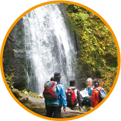
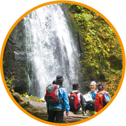

奥入瀬渓流の自然環境保全のために美しい清流とブナ林をゆっくり味わっていただくために
十和田八幡平国立公園『奥入瀬渓流』は、後世に残すべき貴重な自然環境や美しい風景を有しており、その保全が大切です。同時に、県内外から年間約280万人が訪れる青森県を代表する景勝地、観光地として、今後より一層の観光活性化が望まれています。
このため、『奥入瀬渓流』の自然環境保全に資する活動を官民一体となって推進することを趣旨として、産業観光・自然環境・行政の各機関で組織する「奥入瀬渓流エコツーリズムプロジェクト実行委員会」では、平成20年から『奥入瀬渓流エコツーリズムプロジェクト』を展開することとしました。
官民協力し、一体となった活動を行うことで、奥入瀬渓流の自然価値の向上と、奥入瀬渓流本来の魅力を全国に発信する契機にしたいと考えています。
奥入瀬渓流エコロードフェスタ
マイカー車輌が規制された奥入瀬渓流をゆっくり散策できる多彩なイベント満載！
2014年10/25（土）→10/26（日）
奥入瀬渓流
国道102号奥入瀬渓流区間（一般国道102号惣辺交差点～子ノ口交差点）
マイカー交通規制にご協力下さい。
エコロードフェスタは、奥入瀬渓流内のマイカー交通規制期間中（9：00～15：00）に実施します。
※災害発生等、現地状況により交通規制を実施しない場合があります。
期間中に奥入瀬渓流へマイカーでお越しの際は焼山駐車場（無料）、休屋駐車場（無料）に駐車の上、シャトルバス（有料）をご利用ください。
 

(C) Oirasekeiryu Ecotourizum Project. All Rights Reserved.
奥入瀬渓流エコロードフェスタ -eco ROAD FESTA-
『奥入瀬渓流』の自然環境保全に資する活動を官民一体となって推進することを趣旨として、産業観光・自然環境・行政の各機関で組織する「奥入瀬渓流エコツーリズムプロジェクト実行委員会」では、平成20年から『奥入瀬渓流エコツーリズムプロジェクト』を展開することとしました。
官民協力し、一体となった活動を行うことで、奥入瀬渓流の自然価値の向上と、奥入瀬渓流本来の魅力を全国に発信する契機にしたいと考えています。
奥入瀬渓流エコロードフェスタの模様（YouTube動画・約5分）